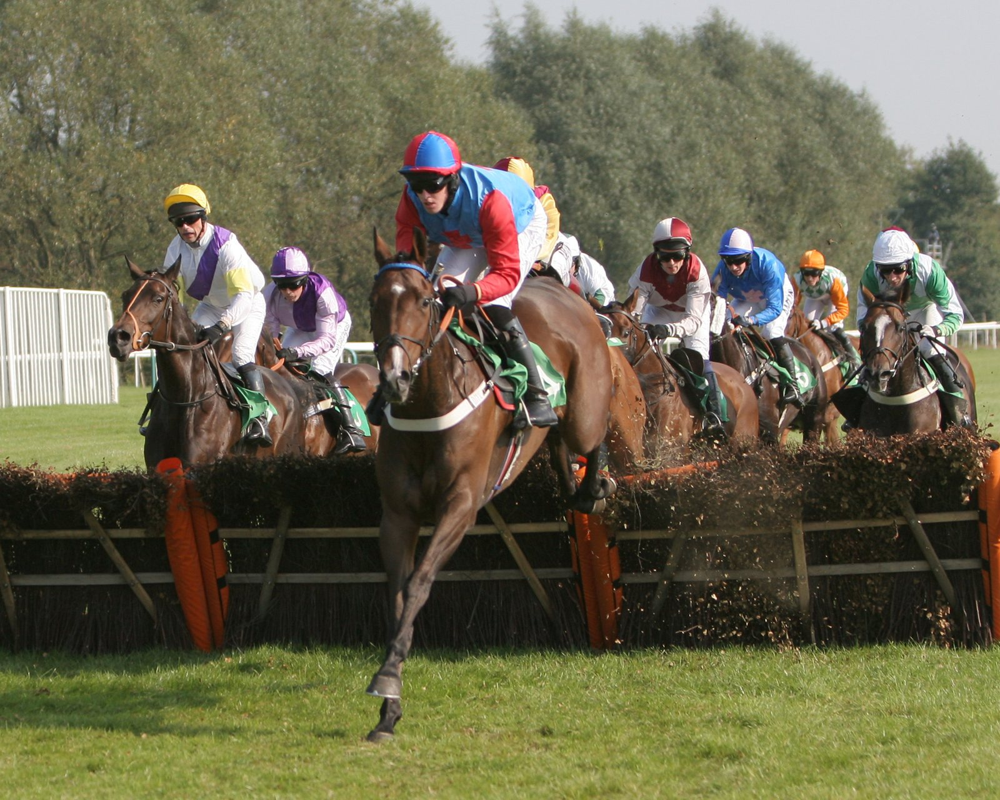

Bossman Jack debuta en vallas con victoria y el 12/1 para el Brown Advisory
El ganador del Mersey Novices' Hurdle se impuso por cuatro cuerpos y medio a Kalkbrenner en Carlisle, bajo la lluvia, y los corredores de apuestas le recortaron la cotización para el Festival de Cheltenham.

No fue un paseo. Bossman Jack, favorito a 2/5 en la «Chasing Excellence» Novices' Chase de Carlisle, sobre 2m4f, tuvo que emplearse con Kalkbrenner, el ejemplar de Ben Pauling, que le plantó cara hasta después de la última valla.
Harry Skelton lo llevó con suavidad hasta ponerse a su altura antes del último obstáculo. Allí Kalkbrenner encontró fuerzas para apretar y amenazar al favorito, pero el hijo de la casa de Dan Skelton respondió a la monta enérgica de su jockey, se alargó cuesta arriba y cruzó la meta con cuatro cuerpos y medio de ventaja.
Era la primera salida del caballo de seis años en carreras de vallas grandes, y se notó. Hubo algún error de novato, nada grave en un debut que por lo demás fue correcto. Bossman Jack llegaba a Carlisle como ganador del Grupo 1 Mersey Novices' Hurdle de Aintree, disputado en abril, y figura entre los mejores candidatos de Dan Skelton para la temporada de novatos en vallas.
La respuesta del mercado fue inmediata: Paddy Power lo bajó de 16/1 a 12/1 para el Brown Advisory Novices' Chase, la prueba de Grupo 1 sobre tres millas del Festival de Cheltenham.
El preparador, con la capucha puesta bajo el aguacero, repasó la actuación: «No me sorprendieron los errores de novato. Trabajó con oficio para un caballo del que se esperaba que ganase, pero creo que irá haciendo las cosas cada vez más fáciles». También recordó la evolución del año pasado: «Se veía que las cosas le llegaban un poco pronto, hasta que lo encajó todo en Aintree». Y sobre el nivel de la carrera: «Creo que era un lote bastante digno. Va a llevar tiempo».
Fichas: Jack (caballo)
Por Martín Larrañeta